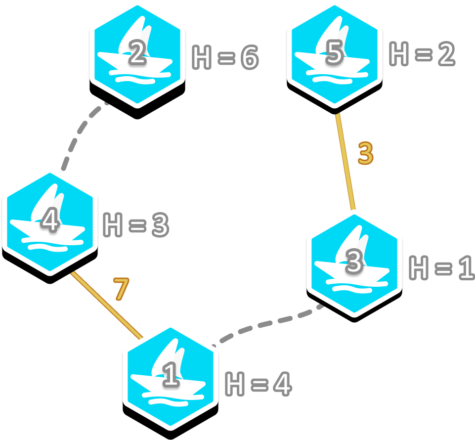

In Pak Dengklek's hometown, there are $N$ ports and $M$ roads connecting them. The ports are numbered from $1$ to $N$, and the roads are numbered from $1$ to $M$. Road $j$ connects port $U_j$ and port $V_j$.
Port $i$ has a height of $H_i$ metres above sea level. For each pair of different ports $u$ and $v$, Pak Dengklek can build a bridge connecting them for $H_u + H_v$ million rupiahs. For security reasons, each port can only be connected with at most one bridge.
Pak Dengklek wants to build zero or more bridges with the minimum possible total cost such that all ports are connected. In other words, for each pair of different ports, there must be a path that connects them, either directly or indirectly, through roads or bridges. Help Pak Dengklek determine the minimum possible total cost to connect all ports! You should also inform Pak Dengklek if it turns out to be impossible to connect all ports.
Pak Dengklek also has a curiosity level of $Q$. If $Q = 1$ and there is a way to connect all ports, you should also determine which pairs of ports need to be connected. If there are multiple possible ways, you may output any of them. However, if $Q = 0$, you may output only the minimum possible total cost.
The input is given with the following format:
N M Q H1 H2 … HN U1 V1 U2 V2 ⋮ UM VM
The first line contains the minimum possible total cost in million rupiahs to connect all ports, or -1 if it is impossible.
If $Q = 1$ and there is a way to connect all ports, then the second line contains an integer $K$ representing the number of bridges Pak Dengklek needs to build. Then, each of the next $K$ lines contains two integers $X_k$ and $Y_k$, representing that the $k$-th bridge should connect port $X_k$ and port $Y_k$.
However, if $Q = 0$, you may still output which pairs of ports should be connected with a bridge, even though it will not affect the evaluation.
5 2 1 4 6 1 3 2 1 3 2 4
10 2 1 4 5 3
This sample is illustrated by the following image. Each yellow line represents a bridge that should be built, with the cost written next to it. Each dotted line represents a road.

The costs to build the two bridges are $H_1 + H_4 = 4 + 3 = 7$ and $H_3 + H_5 = 1 + 2 = 3$. The total cost is $7 + 3 = 10$, which is the minimum possible total cost. There is no way to achieve a cost of less than $10$.
5 1 1 2 1 4 3 4 3 5
-1
It is impossible to connect all ports since each port can only be connected to at most one bridge. Therefore, even though $Q = 1$, you do not need to output which pairs of ports should be connected with a bridge.
3 1 0 2 8 1 1 3
9
Pak Dengklek should build a bridge connecting port $2$ and port $3$. You do not need to output which pairs of ports should be connected with a bridge as $Q = 0$.